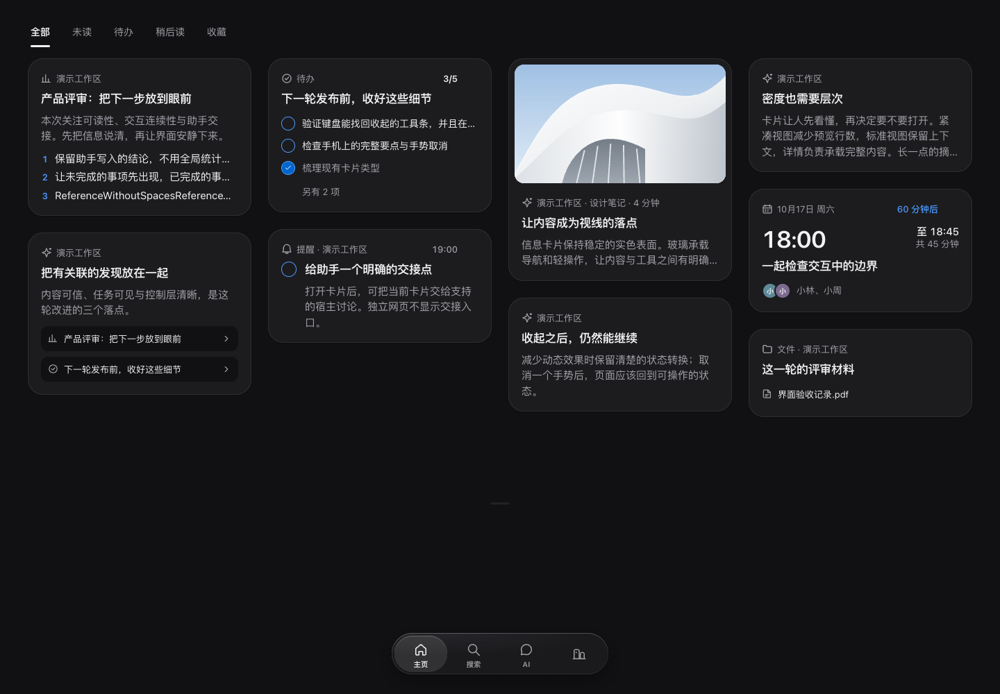

桌面主页 · 左上紧凑分栏
2026-10-19 用户选择 B，见 ADR 0043。A 不加与 C 居中不采用。复用全部、未读、待办、稍后读、收藏，与信息流左侧对齐；标签只占内容宽度。底部导航和搜索条件不变。
本地 42 号画板，线上未同步。六张截图来自真实实现与合成卡片，无临时样式。桌面分栏随页面滚动；顶部 24px、高 44px、间隔 24px，当前项用既有 ink、700 字重和下划线，下方距卡片 16px。
桌面 1440 · 浅色与深色

手机 320 / 390 · 保留原样


四组手机截图与基础提交均为零像素差异。七组专项覆盖筛选、1920 对齐与搜索隔离。Mac 未改，真机、Safari 与 Mac 原生视觉未检查。未访问线上设计或 Mobbin，线上资产记录不变。